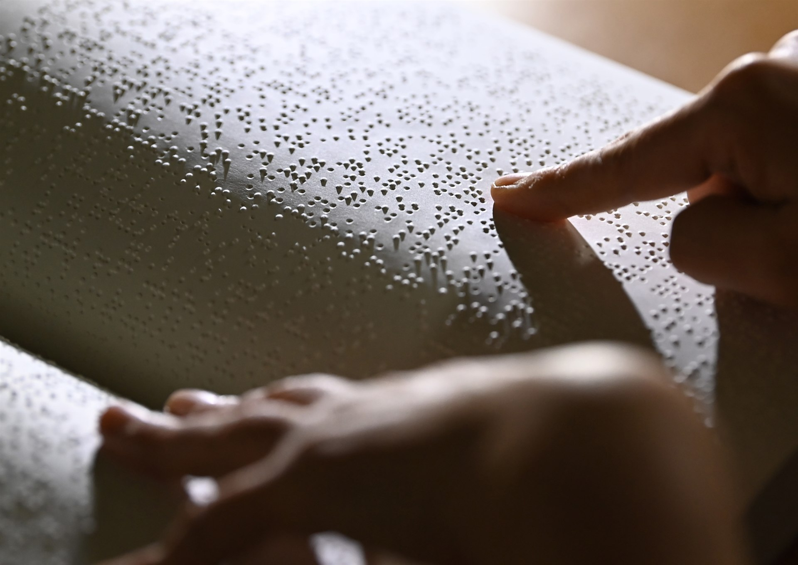
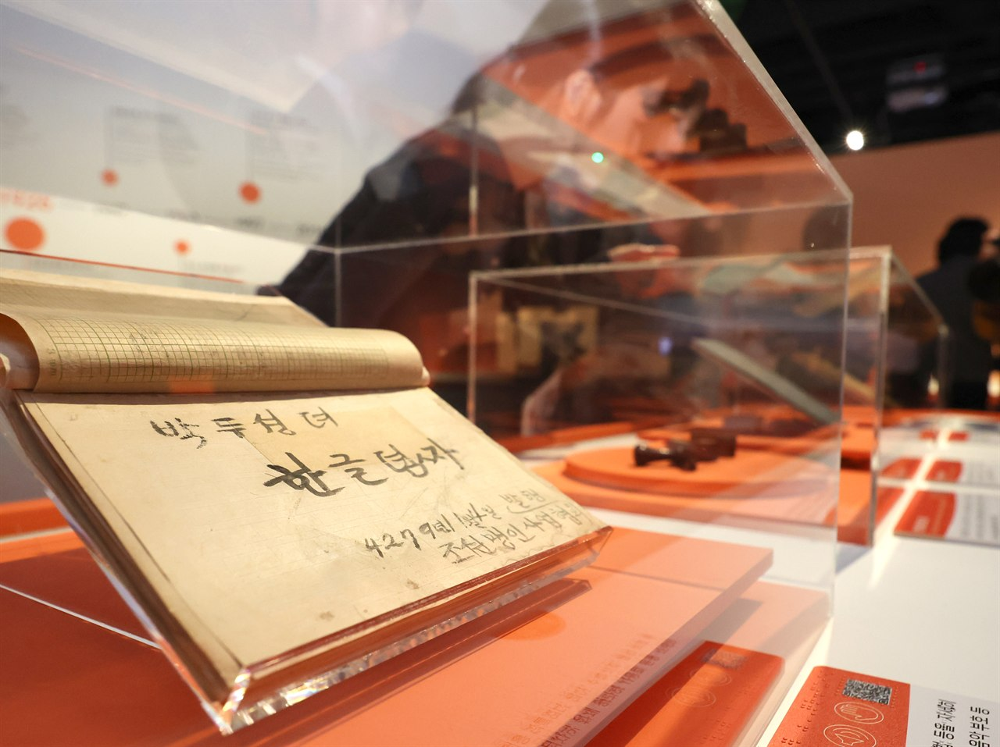
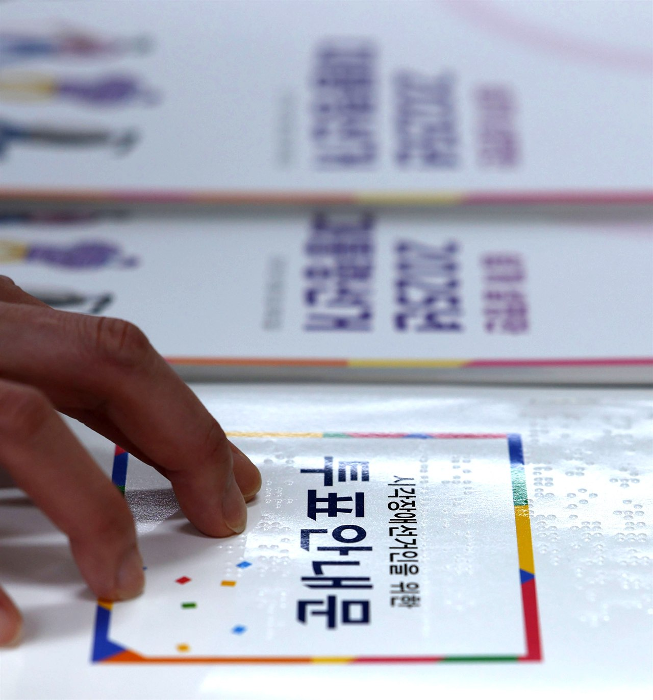
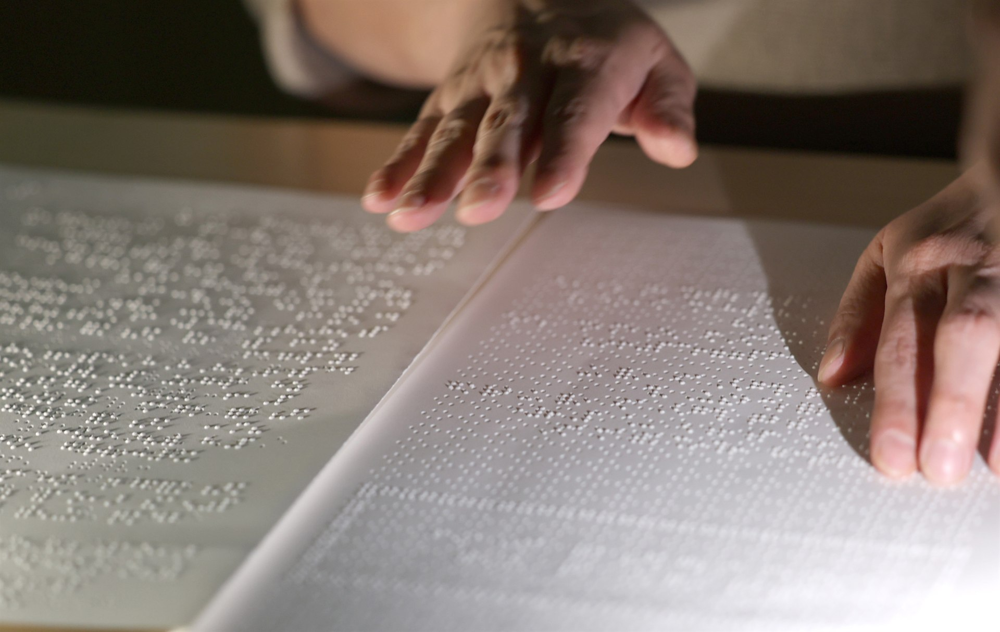

점자로 쓴 첫 문장. 한글 풀이는 기사 끝에서 펼쳐볼 수 있습니다.
⠈⠪⠐⠾⠀⠨⠎⠢⠕⠀⠨⠥⠴⠣⠌⠊
점점,
문장이 손에 잡혔다 [훈맹정음 100년]
11월 4일 한글 점자의 날, 훈맹정음 발표 100년.
종이 위 작은 점들이 줄지어 솟아 있다.
손끝으로 읽는 문자, 점자다.
교과서와 투표안내문, 악보에도 우리말을 적는다.

한글이 손끝에
닿기까지
훈맹정음에 앞서 사용된 한글 점자가 있었다. 로제타 셔우드 홀이 뉴욕 포인트 점자를 바탕으로 만든 평양 점자다.
제생원에서 학생들을 가르치던 박두성은 1920년 한글 점자 연구를 시작했다. 1923년에는 제자들과 조선어점자연구위원회를 조직해 연구를 이어갔다. 그 결실인 한글 점자 ‘훈맹정음’이 1926년 11월 4일 발표됐다.[1]
2026년은 훈맹정음 발표 100년이다. 한글 점자는 이후에도 정비를 거듭했다. 현행 한국 점자 규정은 2024년 1월 개정 고시됐다.

여섯 점으로
적는 우리말
점자는 점의 개수와 위치를 구별해 읽는다. 한글과 마찬가지로 표기 규칙이 있다.
여섯 점식 점자 한 칸에는 세로 세 자리, 가로 두 자리의 점 위치가 있다. 점의 개수와 위치를 조합해 글자와 기호를 나타낸다.[2]
왼쪽은 위에서 아래로 1·2·3점,
오른쪽은 위에서 아래로 4·5·6점.
특정 글자를 나타낸 점형이 아니다.
한글 한 글자와 점자 한 칸이 언제나 일대일로 대응하는 것은 아니다. 한글 점자에는 줄여 쓰는 약자와 약어도 있다.
일반적인 점자판과 점필로 쓸 때는 종이 뒷면에 점을 찍는다. 첫 글자부터 오른쪽에서 왼쪽으로 찍어 나간 뒤, 종이를 뒤집어 왼쪽에서 오른쪽으로 읽는다.[11]
인사 한마디를 골라보세요
안녕하세요
⠣⠒⠉⠻⠚⠠⠝⠬
안녕하세요 · 한글 5글자, 점자 8칸
인사말마다 점자 칸 수와 배열이 다릅니다. ‘또 만나요’의 두 낱말 사이에는 빈 칸을 둡니다.
글자를 ‘안다’는 것과
‘읽는다’는 것 사이
점의 배열을 외운 뒤에는 손끝으로 점을 구별하고 문장을 따라가는 연습이 필요하다. 중도 시각장애인에게는 익숙한 우리말을 손끝으로 읽는 법을 배우는 과정이기도 하다.
하상장애인복지관은 중도 시각장애인과 통합교육 시각장애 학생을 위한 한글 점자 읽기 교육을 운영한다. 학교에서 필요한 그래프와 도형, 시험 문제를 점자로 제작하고, 수능 모의고사는 점자형과 음성형으로 지원한다. [4]
수식과 외국어를 적는 점자도 배운다. 국립국어원의 온라인 강좌에는 수학·과학·통일영어점자가 있다. 하상복지관의 ‘점자세상’에는 중도 실명자를 위한 한글 점자 과정과 점역 실무 교육이 마련돼 있다. 외국어를 공부하고, 수식을 풀고, 시험을 준비하는 일에도 각 분야의 점자 규칙이 쓰인다.[5]
읽을 책은 제때 도착해야 한다. 뉴시스는 2026년 10월 20일, 시각장애인용 교과서를 학기 시작 전에 제작·보급할 수 있도록 디지털 파일의 형식과 제출 절차를 명확히 하는 ‘교과용 도서에 관한 규정’ 개정안이 국무회의에서 의결됐다고 보도했다. 관련 보도 · 뉴시스 (새 탭)
말을 전하기 위해,
먼저 살피는 손
투표 절차를 설명하는 안내문에도 점자가 쓰인다. 잘못 옮긴 글이나 빠진 내용은 없는지 확인하는 일도 필요하다.
일반 문자로 적힌 글을 점자로 옮기는 일을 ‘점역’이라고 한다. 잘못된 표기를 찾아 바로잡는 ‘교정’도 거친다. 점역·교정사 자격 검정에는 일반 문자를 점자로 옮기는 실기와, 잘못 표기된 점자를 바로잡는 실기가 포함된다. [6]
누군가 읽을 문장을,
먼저 살피는 손이 있다.

책을 읽고,
악보를 펼치고
점자는 교과서와 투표안내문을 넘어
문학 작품과 악보, 전자 문서로도 쓰인다.

실로암시각장애인음악재활센터에서는 음악 점역사가 악보를 해석해 점역하고, 시각장애인 음악 교정사가 규정에 맞게 교정한다. [7]
영국 왕립시각장애인협회(RNIB)가 2024년 공개한 조사에서, 점자를 아는 성인 참여자 가운데 다수는 종이 점자에 더해 음성과 점자 디스플레이 같은 기술을 활용했다. 약 포장의 표시를 확인하거나 책·문서를 읽을 때도 점자를 썼다.[8]
전자 점자 단말기에서는 작은 핀이 오르내리며 글을 표시한다. 미국 의회도서관의 국립시각장애인·독서장애인도서관서비스(NLS)는 이용 자격을 갖춘 회원에게 전자 점자 단말기를 무료로 대여한다. 단말기를 스마트폰이나 컴퓨터에 연결하면 전자 문서도 점자로 읽을 수 있다.[9]
‘점자가 있다는 것’과
‘읽을 수 있다는 것’ 사이
국립국어원이 2025년 20~69세 시각장애인 500명을 대상으로 한 조사에서, 점자를 읽고 쓸 수 있다고 답한 비율은 14.4%였다. 이 문항에는 499명이 응답했다.
점자 발전에 필요한 일을 묻는 복수응답 문항에서는 해당 문항 응답자 492명 가운데 74%(364명)가 ‘점자 교원 양성 및 점자 교육 활성화’를 골랐다. [10]
점자를 읽고 쓸 수 있다는 응답
점자 교원 양성·교육 활성화를 고른 응답
국립국어원 2025 조사 · 20~69세 시각장애인 대상. 문항 응답자는 각각 499명·492명이며, 74%는 복수응답 결과다.
종이 위에 말을 적고,
손끝으로 문장을 읽는다.
쓰는 사람과 읽는 사람은
그렇게 문장에서 만난다.